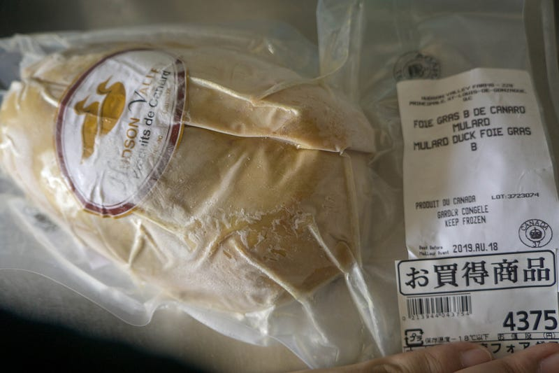
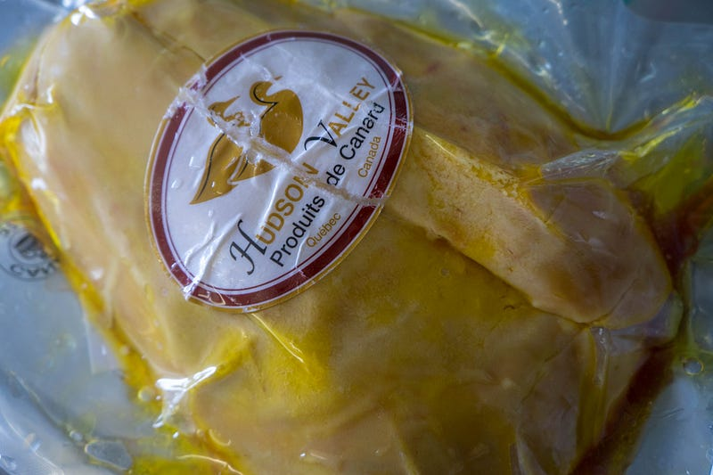
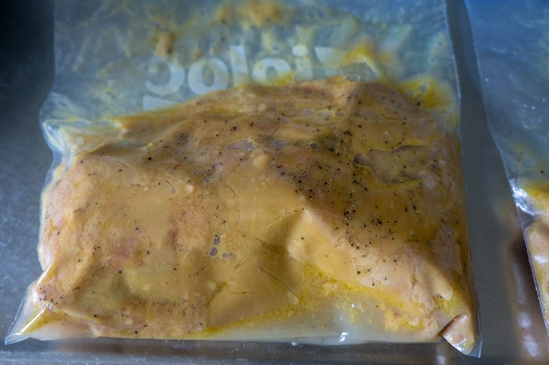
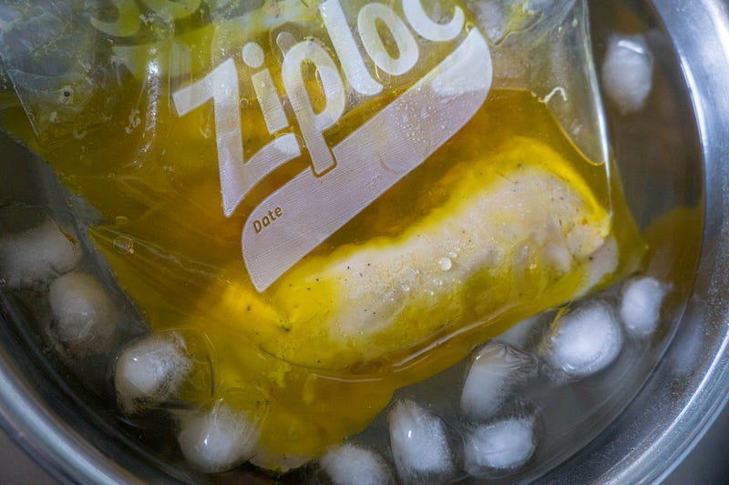
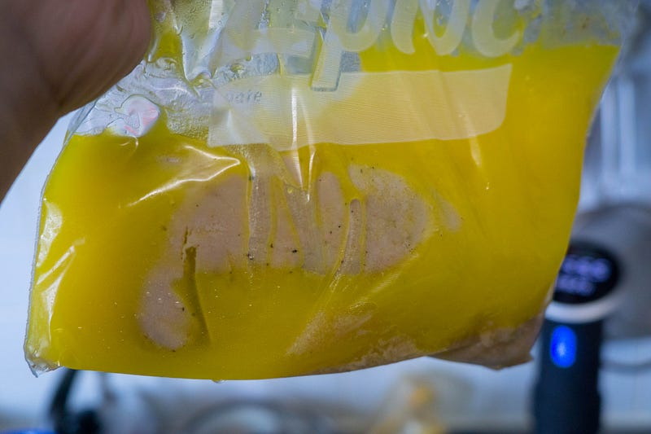
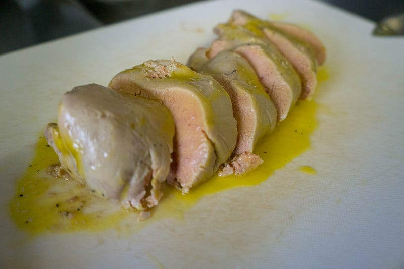
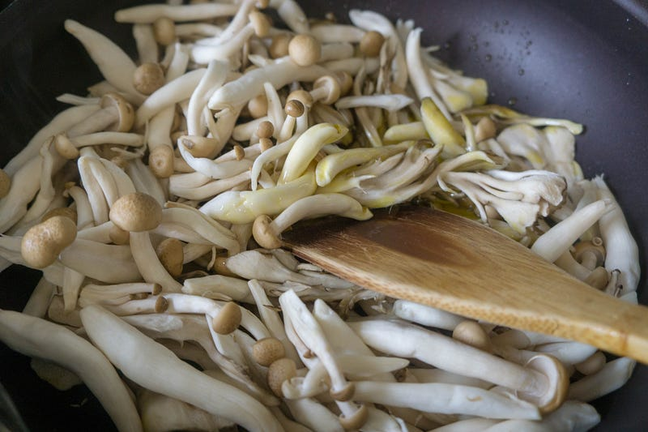
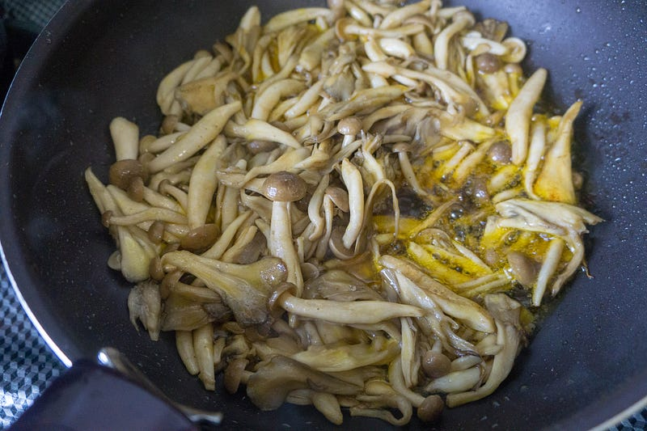
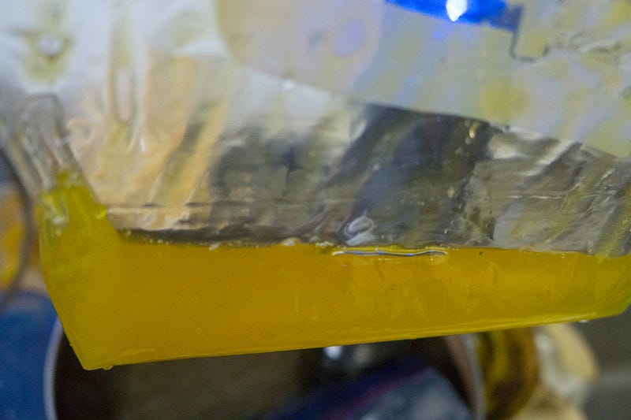
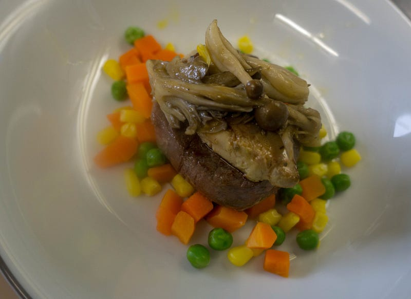

「（我が家的に）原価を聞いてはいけない」低温調理 — 牛ヒレステーキロッシーニ風を作る
「（我が家的に）原価を聞いてはいけない」低温調理 — 牛ヒレステーキロッシーニ風を作る
体調が回復してきて、「なんかいつもと違う物食べるぞ！」という気になったので、家で牛ヒレステーキロッシーニ風を作る事にした。妻には「家でフォアグラとかまずやらないし、『今夜は牛ヒレロッシーニ風よ〜』なんて聞いたことない」と非難された。が、やる。
先に言っておくと、本物に比べれば全然たいしたことのないものしかできなかったけど、とにかく自分でやってみることが重要です。
めでたいことに、7月前半から悩まされてきた胃炎・食道炎・慢性副鼻腔炎がだんだんよくなりはじめてきた。
まず8月中旬に食事が比較的普通に食べられるようになってきて、先日耳鼻科で処方してもらったなにか（なんなのかはよくわかってない）がかなり副鼻腔炎に効いて、完治とはいかないまでも大分楽になってきた。
そして今現在、食べる量はまだ全然戻らないが、とにかく美味しくご飯が食べられるところまでなった。
そこで快気祝いというわけではないが、なにか作ってやろうと思い、普段そんなに食べない牛ステーキをすることにした。フォアグラのっけて。
いや、このブログだといつも食べてるように見えるかもだけど、本当にいつも一番食べる肉は鶏、豚、ラムで、ずーーーーっと間があって牛肉なんですよ…
さて、ロッシーニをするためにはフォアグラが必要ですね。フォアグラは… まぁ別にすごい好きなわけじゃないんで正直最後に食べたのはもう10年くらい前な気がします。調理するのは今回が当然初めて。
冷凍カナールフォアグラ。

なるほどの値段。
水につけて解凍。え、もう脂が浮いてる…？

物の本によればフォアグラ内部には血管とかが結構入り込んでいるので、食感をよくするためにもこれを取ったほうがいいと。なるほど？
しかしフォアグラはもろい。豚や鶏のレバーとは違って、脆い。すっごく脆い。かなり気をつけないといけない。他の肉で多少やったことはあるけど、手探りでやるのはなかなか勇気がいった。そして全部は取れなかった。次回はちゃんと勉強したい。
さて、まずはこのフォアグラを下ごしらえします。塩、胡椒、酒を入れてジップロック。

65℃で30分。
氷水で一気に冷やします。すごい！縮んだ！！！！！フォアグラ、ほとんど脂肪なんだな！！！！！

肉を焼くまで時間があったので冷蔵庫につっこんでおきました。

なんだ、この色… 誰かに「マンゴーピューレだよ♪」と言って出してみたい衝動に駆られた。
フォアグラ本体。コンフィ状態だけど、やわらか。

脂…すごいです… 手もまな板もテュルテュルのぬるぬるです…
さて、こんな事をしている間に正直自分的には肉よりメインだと思うキノコのトリュフ脂炒め作りましょう。
最初は少量作ろうと思ったんだけど、トリュフの脂の量を見て考え直しました。デカい袋のシメジとマイタケ投入。

味つけは基本の塩胡椒を薄めにして、その上に中濃ソースを分かるかわからないかくらいの隠し味として入れておいた。

これ、かなり脂を多めにジャバジャバする感じで入れたのにまだ脂が残ってた。

さて、このあとは前述のフォアグラに焼き目をつけて、これまた55.5℃で1時間低温調理しておいたフィレ肉を焼いたものの上に盛りつけ。

写真下手でごめんな！
さて、肝心の味だが、フォアグラ2枚目まではうまかった。香りもいいし、コクがすげぇ。
ただ問題はとにかく脂がすごいこと！子供達も意外におかわりまでしてくれたけど、食べてくれる量なんてたかが知れている。大人は4枚までいっちゃうことが可能だったが、そこから先はちょっと脂が辛かった…
あと、やっぱり下ごしらえの時点での血管とかの処理があまかった。なるほどなぁ、というかんじ。
逆にうまかったのはキノコ。そしてそれと味変のために用意しておいた白菜の漬け物。これはご飯にかけて食べると完全にうまい。すごい高級なバター醤油ご飯的な感じ。
翌日の朝ご飯にも食べた。
個人的にはフォアグラは量を調整できれば値段的には納得だけど、技術代ということで少しおおめに料金を払ってプロに料理してもらったほうが総合的にはうまいかなー、という感じでした。